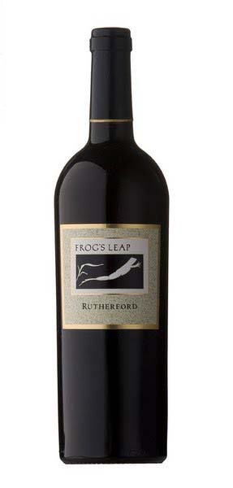
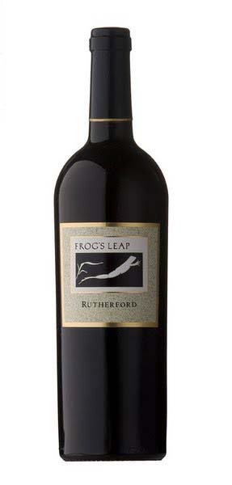

Frog's Leap Merlot
Rutherford, CA
$38.50 | Alc. % 13.2
Donec vitae elit sed nisi fringilla tincidunt nec id neque. Sed id vestibulum nisl. Aliquam aliquam nec ante at luctus. Nam ullamcorper efficitur venenatis. Duis ut lobortis mauris. Donec cursus quam et efficitur varius. Ut est arcu, interdum a metus eget, consectetur molestie metus. Maecenas commodo condimentum turpis non vehicula.After the challenging vintage of 2011, you can imagine our relief when it became obvious to us that 2012 was going to be one of the most glorious vintages in decades. “Back to Pomerol” was my first thought and “back to 100% Merlot” was my first decision. Here in Rutherford we have found that coaxing out the ripe, purple-plum aromas and soft, succulent flavors of Merlot is best achieved when the grape is left to stand on its own.
The 2012 demonstrates everything one can ask for from a classic Merlot. Pretty, red-fruited aromas and flavors with the trademark touches of damp earth and sage. This wine also has that defining Merlot mouthfeel, one that balances tenderness and authority making this the perfect candidate for either tonight’s dinner of roasted chicken or a decade of sleeping in the cellar.